- 应用
- AI Eval Platform 本地开发栈（FastAPI + Vite React）
- 分支
- agent/complete-m5-02-3f0df081fb69（PR head）
- 基线
- origin/main @ 5ae37df
- 数据库
- SQLite 演示库 + 迁移 0015_dataset_image_digests
- 浏览器
- Google Chrome headless · Playwright 1.65.0 · 1440×1000
- 数据形态
- 5 个模型配置（4 正常 / 1 撤销）+ 流程中新建 1 个、轮换 1 个、撤销 1 个
- 模型端点
- 本地假供应商（可达）与不可达端口各一个，确定性覆盖成功/失败
- 账号
- 本地演示管理员与只读成员（密码不写入报告）
Browser smoke · 真实登录 / 列表 / 新建 / 测试 / 轮换 / 撤销 / 权限 / 预检
M5-02 模型凭据与配置页 · 浏览器集成冒烟
对 M5-02 模型凭据页做端到端浏览器冒烟：基线占位页对比、配置列表与详情、表单校验、新建凭据、刷新后的密钥卫生、端点连通性、搜索空态、轮换、撤销、只读权限、向导感知、预检阻塞与失败诊断。共 16 个场景、37 项断言全部通过，未发现产品缺陷。
16冒烟场景
37断言
0发现缺陷
10新增 API 集成测试
Environment and Artifact
2026-11-10 · AI Eval Platform · M5-02Scenario Matrix
16 pass| # | 场景 | 结果 | 说明 | 证据 |
|---|---|---|---|---|
| 01 | 基线：模型凭据占位页 | PASS | 基线 `origin/main` 的 /models 只有“后续里程碑接入”占位，无列表、操作或凭据信息。 | before-01-models-placeholder.png |
| 02 | 基线：发起评测未标记撤销凭据 | PASS | 选择已撤销凭据的模型时，旧页面照常展示选项且没有警告。 | before-02-wizard-revoked-model.png |
| 03 | 模型配置列表与可用性 | PASS | 展示 5 个配置、4/5 可用、服务商、端点、模型名、协议、价格、掩码与最近使用；撤销项有独立状态。 | after-01-models-list.png |
| 04 | 模型配置详情 | PASS | 详情抽屉展示掩码、价格、最近轮换/使用、累计请求、Token、成本与限制。 | after-02-detail.png |
| 05 | 表单字段级校验 | PASS | 空表单提交时在服务商、名称、端点、模型名等字段就地报错，不发起写请求。 | after-03-validation.png |
| 06 | 新建模型配置 | PASS | 可新建凭据并保存；卡片只出现 `****1234` 掩码。流程同时断言写请求后列表立即出现新配置。 | after-04-create-drawer.png after-05-created.png |
| 07 | 刷新与浏览器状态 | PASS | 刷新后配置仍在、密钥仍只显示掩码；DOM、localStorage、sessionStorage、URL 与资源请求 URL 均无明文 Key。 | after-05-created.png |
| 08 | 端点连通性批量测试 | PASS | 全部验证后 4 个可达端点显示“刚刚验证通过”，不可达端点显示“验证失败”；可用数保持 5/6。 | after-06-test-all.png |
| 09 | 搜索无结果空态 | PASS | 无匹配时展示空态与“清除搜索”，不伪造数据。 | after-07-search-empty.png |
| 10 | 轮换 Key | PASS | 替换 Key 后掩码变为 `****9999`，旧 Key 立即失效，新 Key 自动复测。 | after-08-rotate-dialog.png after-09-rotated.png |
| 11 | 撤销凭据 | PASS | 二次确认展示影响范围；撤销后卡片标“已撤销”、可用数降为 4/6。 | after-10-revoke-dialog.png after-11-revoked.png |
| 12 | 只读成员权限边界 | PASS | 只读账号可读配置与掩码，页面没有新增/替换/撤销/测试入口；API 写请求返回 403 `forbidden`。 | after-12-viewer-readonly.png |
| 13 | 向导即时感知 | PASS | 新建的模型立即出现在发起评测选择中；已撤销凭据的选项带“凭据已撤销”，选中后出现阻塞说明。 | after-13-wizard-warning.png |
| 14 | 预检阻塞 | PASS | 对撤销凭据运行一致性检查，显示 `credential_unavailable` 阻塞项且“创建评测”禁用。 | after-14-preflight-blocked.png |
| 15 | 连通性失败诊断 | PASS | 失败弹窗展示稳定错误码 `provider_unavailable`、字段 `Base URL` 与失败原因，并给出修复建议。 | after-15-diagnostic.png |
| 16 | API 预检不变量 | PASS | 直接调用 prepare：撤销配置返回 `credential_unavailable` 阻塞项；页面断言与 API 断言一致。 | — |
Issues and Observations
No defects foundNo defects were found.
Evidence
17 screenshots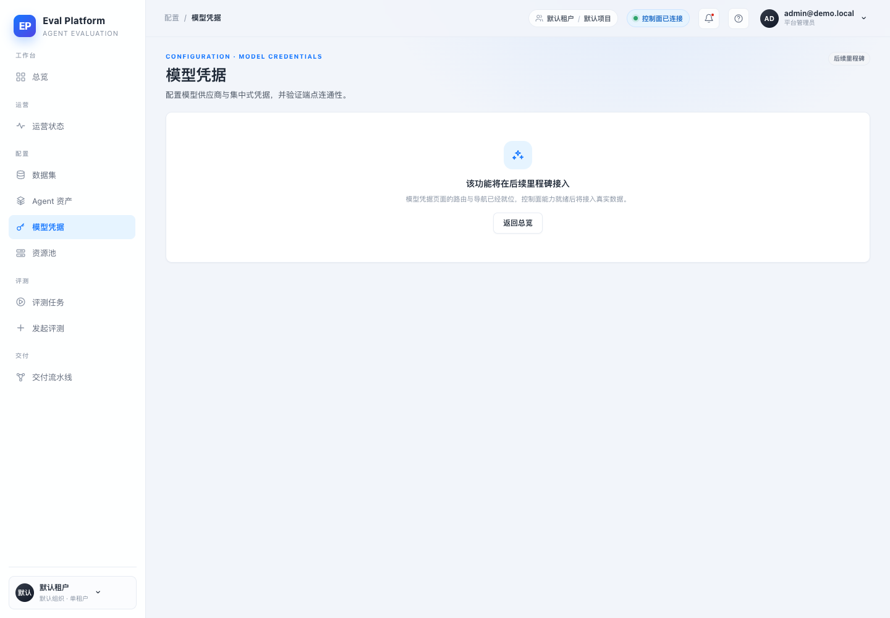
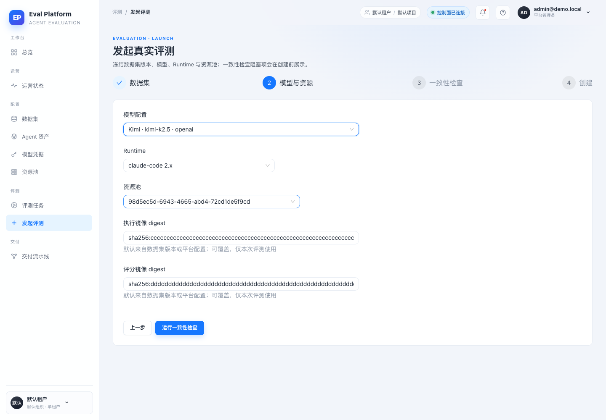
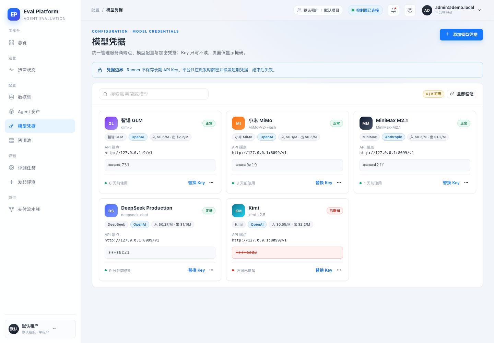
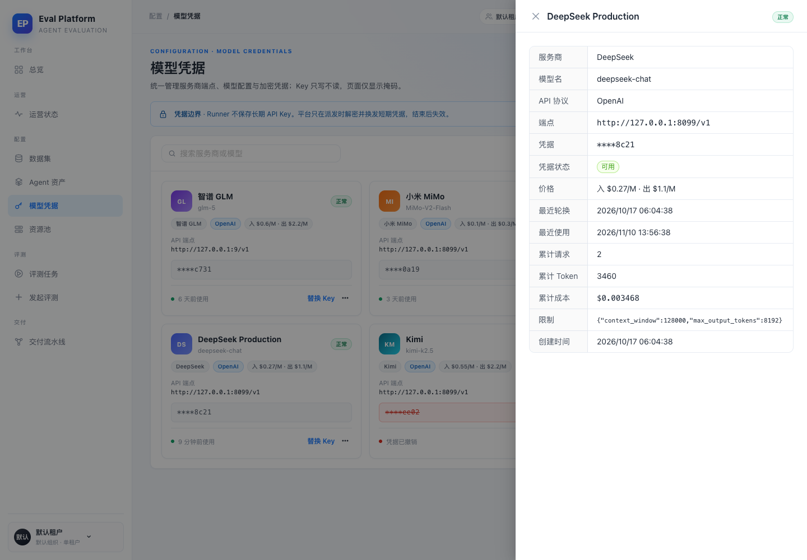
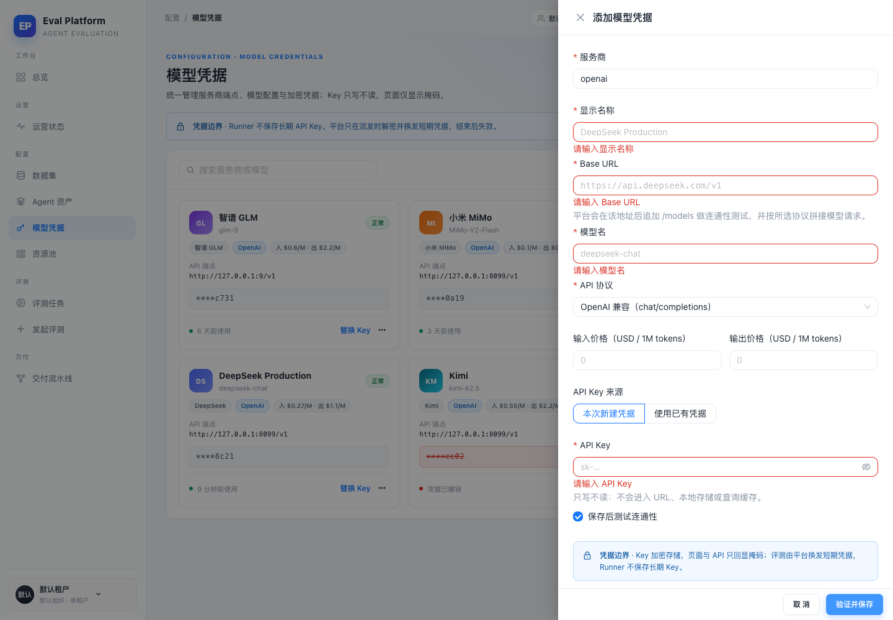
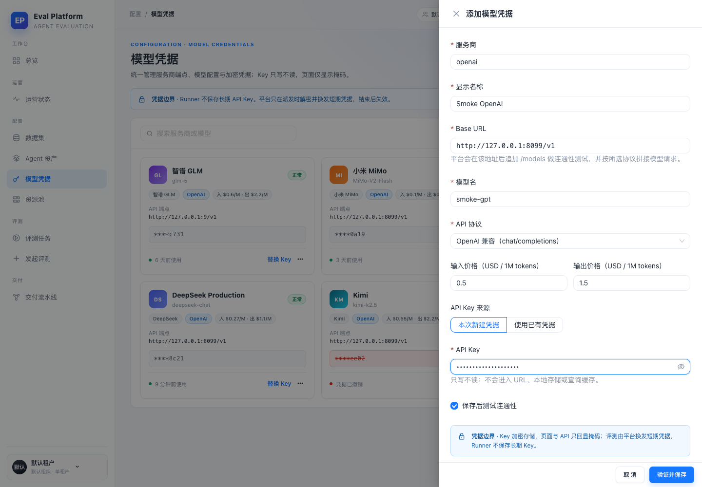
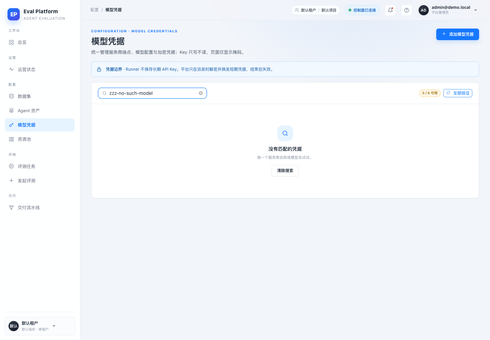
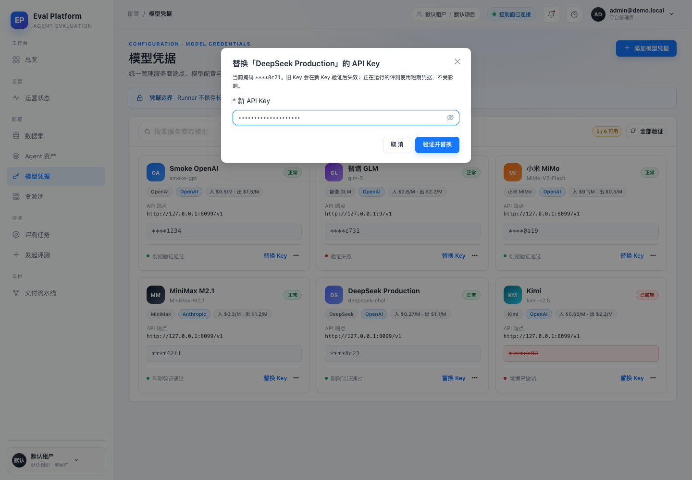
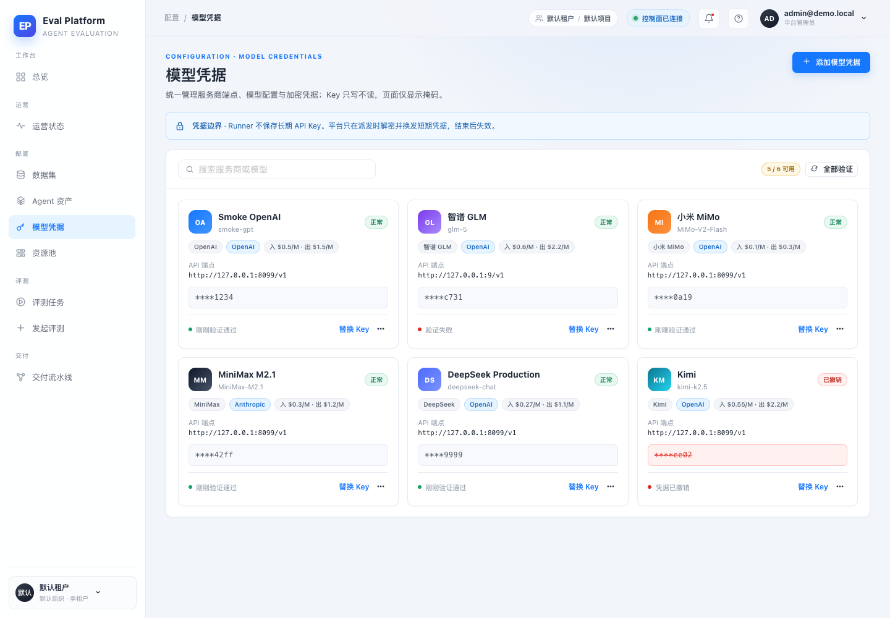
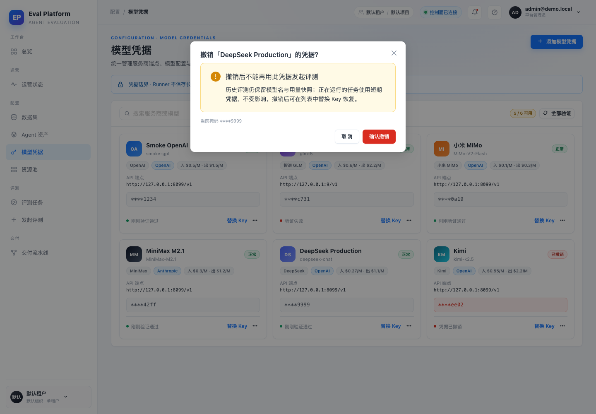
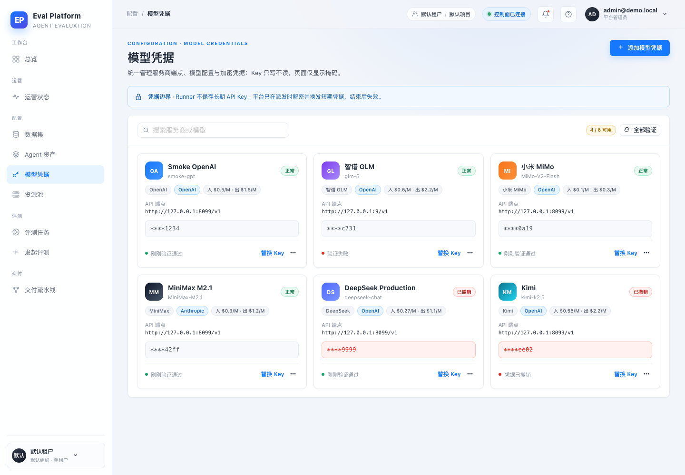
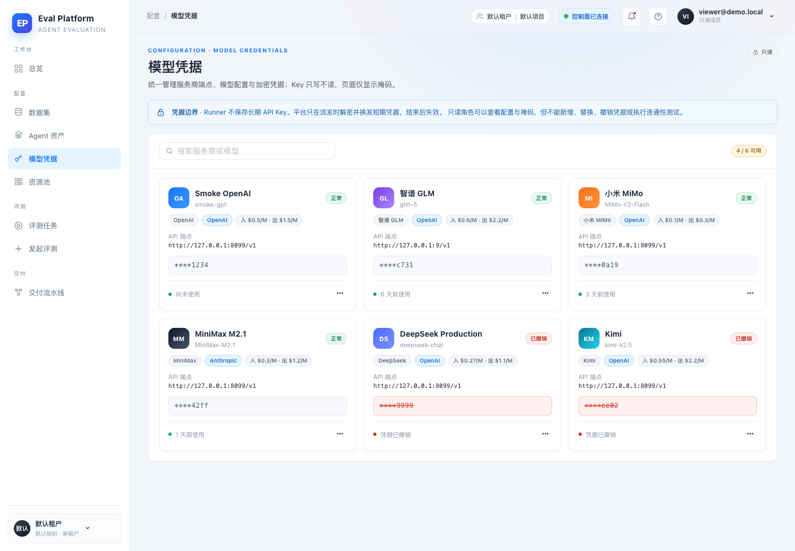
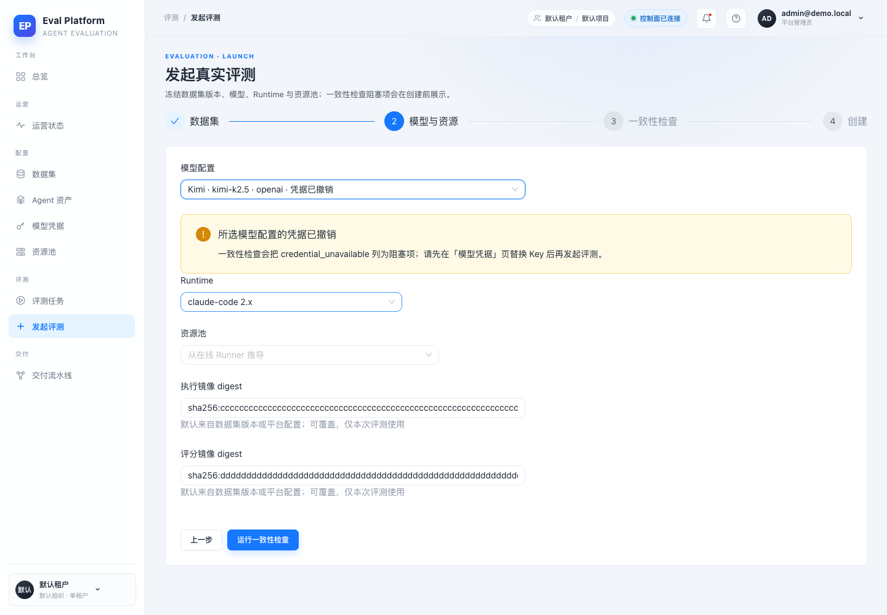
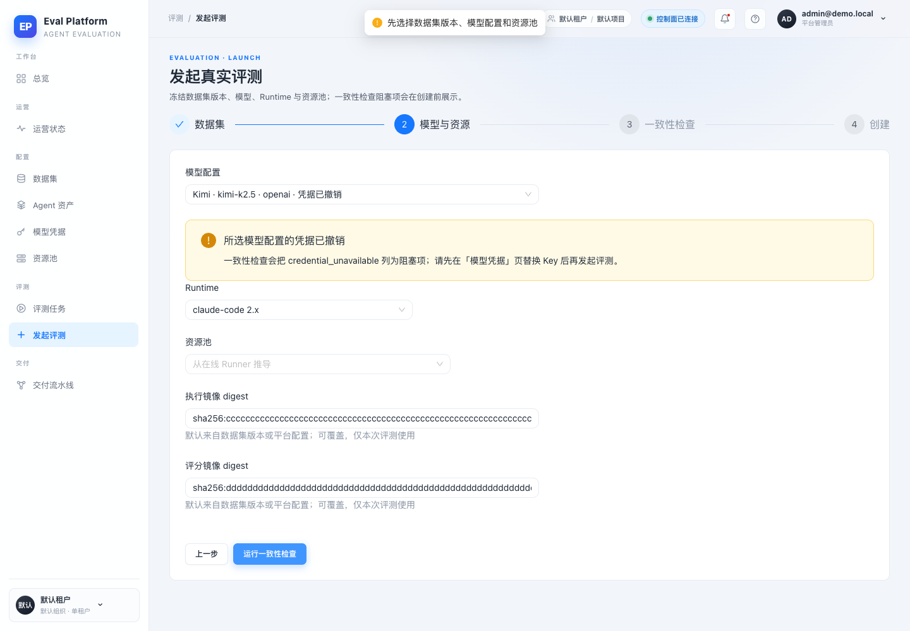
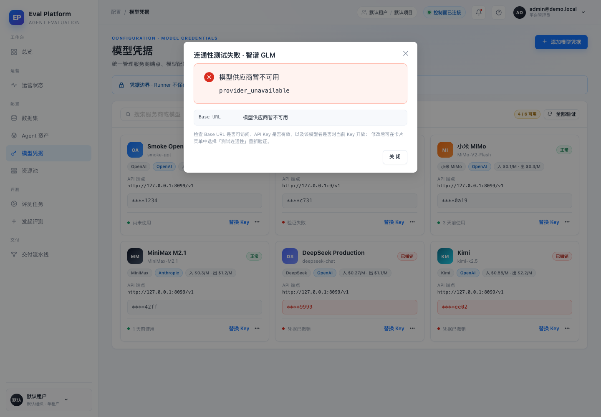
Automated Coverage Assessment
4 areas reviewed| 区域 | 覆盖 | 结论 | 建议 |
|---|---|---|---|
Conclusion
Ready for review16 个场景、37 项断言全部通过；页面、权限与预检行为符合 M5-02 验收。
- 预期控制台噪声已排除：未登录 auth/me 401、故障端点 503、AntD 静态 message 提示，均非产品缺陷。
- Before 截图来自独立 worktree 的 origin/main，使用同一数据库、账号、视口与假供应商。
- 真实供应商连通性与费用不在本次自动化范围内。
Generated from report-data.json by computer-use-smoke-reporting; screenshots are unedited browser captures.